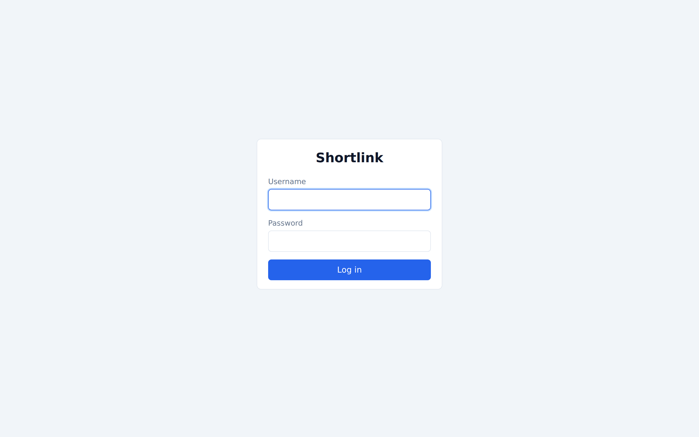

Getting started
Run with Docker
git clone https://github.com/olmesm/shortlink
cd shortlink
docker compose up --buildOpen http://localhost:8080/admin. On first start an admin
user is created. Its password comes from
SHORTLINK_INITIAL_ADMIN_PASSWORD if set — otherwise a password is
generated and printed once in the container log:
docker compose logs shortlink | grep "admin user"To use PostgreSQL instead of the embedded SQLite database:
docker compose --profile postgres up --buildand un-comment the SHORTLINK_DB_* variables in
docker-compose.yml.
Run from source
Requires the .NET 8 SDK.
dotnet run --project src/Shortlink.Web # serves on :8080
dotnet test # 88 unit + integration tests
cd e2e && npm install && npm test # 22 Playwright browser testsFirst login

Sign in at /admin/login with the initial admin account, then:
- Create your own account under Users (or change the admin password).
- Create an API key if you want to script the REST API.
- Set
SHORTLINK_DEFAULT_DOMAINto the public domain your links will live on (e.g.sho.rt) so generated short URLs render correctly.
Configuration reference
Everything is configured with environment variables.
| Variable | Default | Purpose |
|---|---|---|
SHORTLINK_PORT | 8080 | HTTP listen port |
SHORTLINK_DEFAULT_DOMAIN | localhost:<port> | Authority used to build short URLs |
SHORTLINK_USE_HTTPS | false | Render short URLs with https:// |
SHORTLINK_DATA_DIR | ./data | SQLite db, GeoLite2 db, cookie keys |
SHORTLINK_DB_DRIVER | sqlite | sqlite or postgres |
SHORTLINK_DB_CONNECTION | SQLite in data dir | Full connection string |
SHORTLINK_SHORT_CODE_LENGTH | 5 | Length of generated codes (min 4) |
SHORTLINK_REDIRECT_STATUS | 302 | Default redirect status (301/302/307/308) |
SHORTLINK_AUTO_RESOLVE_TITLES | true | Fetch page titles in the background |
SHORTLINK_DISABLE_TRACKING | false | Record no visits at all |
SHORTLINK_DISABLE_IP_TRACKING | false | Track visits but never record IPs |
SHORTLINK_ANONYMIZE_IPS | true | Zero the host bits of recorded IPs |
SHORTLINK_TRACK_SKIP_PARAM | unset | Query param that opts a request out of tracking |
SHORTLINK_TRACK_ORPHAN_VISITS | true | Track base-URL / 404 traffic |
SHORTLINK_BASE_URL_REDIRECT | unset | Where GET / redirects (else a landing page) |
SHORTLINK_REGULAR_404_REDIRECT | unset | Redirect for non-short-URL 404s |
SHORTLINK_INVALID_SHORT_URL_REDIRECT | unset | Redirect for unknown or expired short codes |
SHORTLINK_GEOLITE_LICENSE_KEY | unset | Enables GeoLite2 download + geolocation |
SHORTLINK_INITIAL_ADMIN_USERNAME | admin | First-run dashboard admin |
SHORTLINK_INITIAL_ADMIN_PASSWORD | generated | First-run admin password |
SHORTLINK_RATE_LIMIT_PER_MINUTE | 120 | Mutating REST calls per minute per IP (0 disables) |
Behind a reverse proxy, X-Forwarded-For and
X-Forwarded-Proto are honored. All timestamps are UTC.